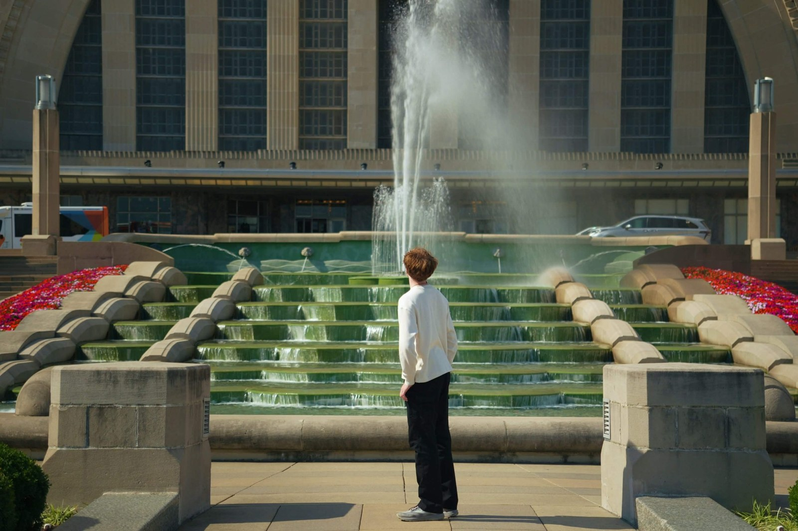
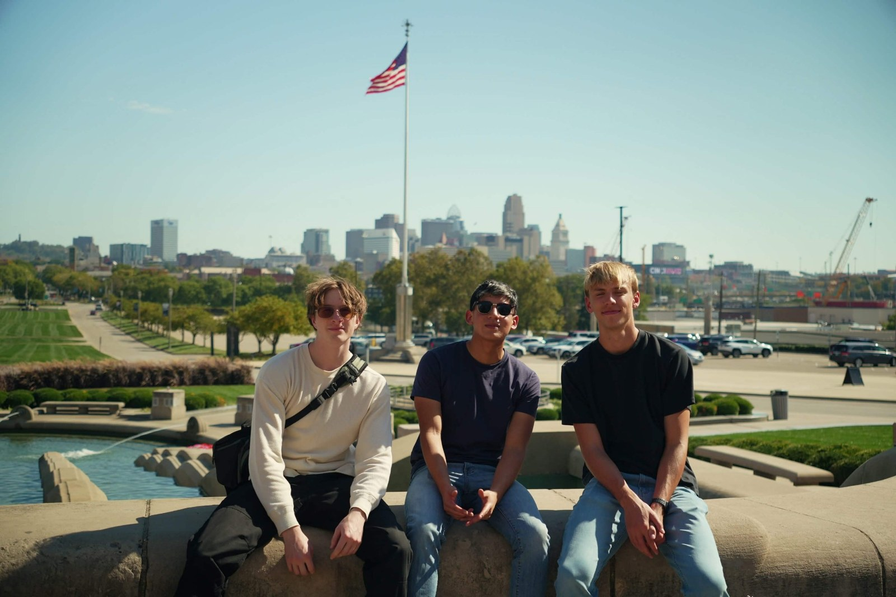

VIDEO / CLIMBING / DOCUMENTARY / CARS
Aidan HughesFreelance videography & editing
I want to make videos that help people find something they never knew they wanted but now feel they need.
01 / SOCIAL COMMERCIAL / 30 SECONDS
Climbing chalk commercial ↗
For one of my projects this year, I created a 30-second social media commercial for my favorite brand of climbing chalk.
I handled all of the pre-production, including the storyboard, shot list, location release forms, talent forms, and actor scheduling.
I also filmed and edited the commercial.
INTRODUCTION
Hi, I’m Aidan, and I want to create well-made short-form and long-form videos. I have always loved video work, starting with making videos as a kid. Now, I have a Sony FX30 and want to pursue more rock climbing and documentary-style content while also exploring car-related videos.
WHAT DRAWS ME TO IT
I personally love rock climbing and showing people the wonders of human dedication, whether through the incredible strength of an experienced rock climber or the innovation behind cars.


CONTACT